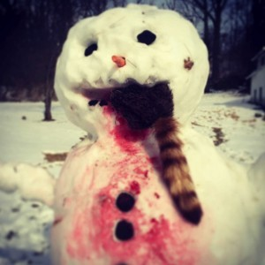

Secret Agent Snowman
snowpeople, everywhere.
store
snow crafts
olaf
random
links
images
snow
air
drawn
food
fire
human
paper
cotton
sand
metal
space
virtual
video
memes
memes
“Granddaddy”

Frosty eats raccoon
Old Winter Returns
Winter returns
2012 eh? how is your life
Oh Snowman…
Snowman stickup
Snowman funeral
雪人
Snoop Dogg Snowman Sweater
Dr. Who Evil Snowmen
Boat Operations Snowman
Seahouses snowman
eat me
Mashed Potatoes Snowman
snow love like snow love
Snowman and his Love
Hidden Snowman
Snowman Shepherd
Snowman Quest
← Previous Entries
Random Snow